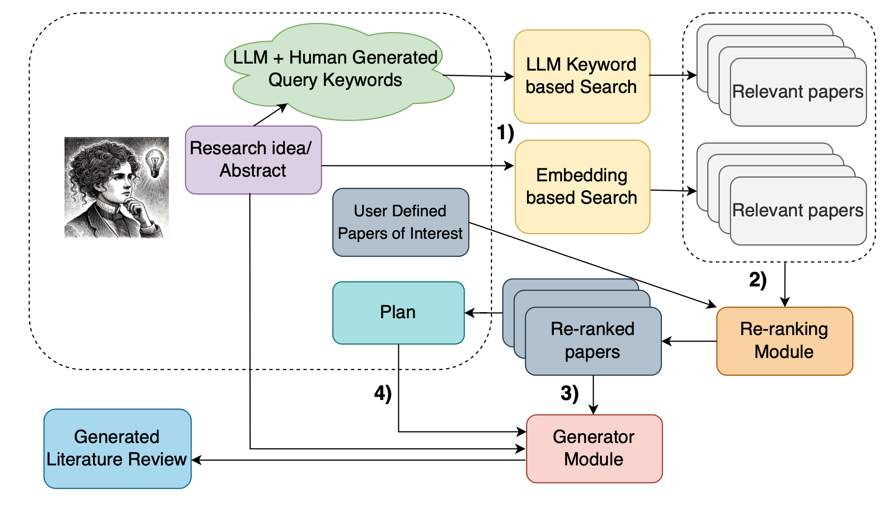

Introduction
Large language models (LLMs) have rapidly evolved from chatbots into capable research assistants, able to search, summarize, and synthesize scholarly work. However, these “deep research” functions are far from flawless. Even the best models still fabricate references or misinterpret studies, reminding us that human oversight remains essential.
It is natural to ask: from the point of view of a researcher, what is the most sensible way to utilize LLMs for literature searching? To answer this question, I conducted a comprehensive study. Below is a recipe of advice summarizing valuable insights from past researchers, together with my personal suggestions.
0. Building a Conceptual Framework with AI Assistance
Suppose you are a first-year Ph.D. student starting a research project in a field that is completely new to you. Facing thousands of unfamiliar papers can feel overwhelming — and it’s rarely effective to dive into the literature without structural ideas in mind. The most sensible first step, therefore, is to construct a conceptual framework that maps the core concepts and their relationships within the field.
As defined by ATLAS.ti, a conceptual framework “explains the main things to be studied — the key factors, variables, or constructs — and any presumed relationships among them.” This simple act of mapping what concepts are being studied, how they are related, and why those relationships matter provides a cognitive anchor for all subsequent research.
Here, large language models can be powerful allies. You can ask an LLM to extract keywords embedded in your project description, suggest analogies or generate concrete examples, and clarify relationships among the major constructs. Through conversational refinement, you gradually form a mental model of the field’s underlying logic.
Such an AI-facilitated conceptual framework does not need to be flawless. It serves as a starting point—a scaffolding that helps you transition smoothly into deeper reading, data collection, or theory building. Recent work on LLMs in theory construction (Astobiza, 2025) supports this approach, showing that dialogue with LLMs can enhance researchers’ ability to structure abstract ideas, connect concepts, and generate preliminary hypotheses.
1. Keyword Search
The core of AI is a powerful searching machine. You get the right keyword, you get the right result. Before initiating “deep research,” it’s crucial to equip the AI with the right vocabulary. LLMs excel when provided with distilled, domain-specific keywords rather than broad or ambiguous topics.
For example, instead of prompting “summarize research on climate adaptation,” specify terms like “urban heat island mitigation,” “regional climate resilience policies,” and “Bayesian downscaling methods.” This mirrors the first stage of the LitLLMs pipeline, where keyword extraction guides more accurate retrieval from scientific databases.
Behind the scenes, this process operates through the same principles formalized in Retrieval-Augmented Generation (RAG) by Lewis et al. (2020). RAG explains how an LLM transforms your query into a vector representation, searches a database for semantically similar documents, and ranks them based on relevance before generating its final response. In other words, the precision of your keywords directly shapes how effectively the model retrieves and prioritizes information.
Think of keywords as coordinates — the more precise they are, the more precisely the AI can navigate the research landscape.

2. Plan-Based Approach
A common reason AI-generated literature reviews contain fabricated or irrelevant references is the absence of structural guidance. Providing the model with a concrete plan — such as section headings, target papers, or specific argument flows — acts as a blueprint for generation.
In experiments by Agarwal et al. (2024), prompting LLMs to first draft an outline (“plan”) and then fill in each section reduced hallucinated references by nearly 25%. You can replicate this effect by asking your AI to:
“Create an outline summarizing recent work on [topic], grouped by methodology and year. Then expand each section using verified sources.”
This modular prompting encourages coherence and factual grounding, allowing you to integrate AI output into your writing with minimal correction.
3. Be (Moderately) Polite
While politeness may seem irrelevant to research, tone can subtly influence how LLMs interpret your request. According to a 2024 article in Scientific American, users who phrase prompts courteously — saying “please,” “could you,” or “thank you” — often receive more balanced and elaborative responses.
The AI isn’t emotionally responsive, of course, but politeness often correlates with clearer, less aggressive prompt framing, which leads to better-structured outputs. In practice, being “moderately polite” doesn’t mean treating AI as a person; it means maintaining conversational clarity that benefits both parties. Think of it as professional etiquette for your digital research assistant.
Conclusion
Artificial intelligence is not a substitute for scholarly judgment — it is an amplifier of it. When used thoughtfully, large language models can dramatically enhance the efficiency and depth of literature exploration. Beginning with a conceptual framework helps you orient yourself within an unfamiliar field; crafting precise keywords ensures accurate retrieval; structuring prompts with a clear plan maintains coherence; and maintaining a professional tone sustains clarity in dialogue.
References
- Agarwal, S., Ma, R., Gupta, N., & Narayan-Chen, A. (2024). LitLLMs: LLMs for Literature Review — Are We There Yet? arXiv preprint arXiv:2412.15249.
- Astobiza, A. (2025). The role of large language models in theory building: A multifaceted conceptual framework. AI and Ethics, Elsevier.
- ATLAS.ti. (n.d.). What is a conceptual framework in qualitative research? atlasti.com
- Lewis, P., Perez, E., Piktus, A., Petroni, F., Karpukhin, V., Goyal, N., ... & Riedel, S. (2020). Retrieval-Augmented Generation for Knowledge-Intensive NLP. Advances in Neural Information Processing Systems (NeurIPS). arXiv:2005.11401
- Scientific American. (2024, February). Should you be nice to AI chatbots such as ChatGPT? Link